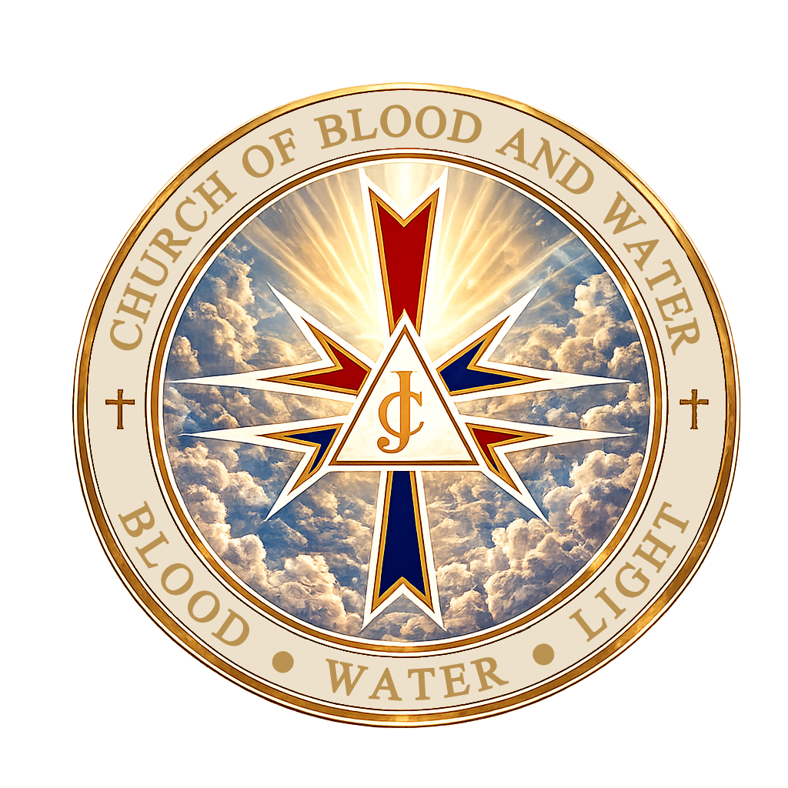

Redeemed by His Blood. Renewed by His Water. Guided by His Light.
Welcome to the Church of Blood and Water, an ecumenical Christian denomination centered on Jesus Christ. We bring together believers from different Christian traditions while remaining united in the essentials of the faith: the Gospel, the Holy Trinity, Scripture, prayer, worship, and service.
We proclaim Jesus Christ as Lord and Savior.
We seek fellowship, discipleship, and service.
We believe God's grace transforms lives.